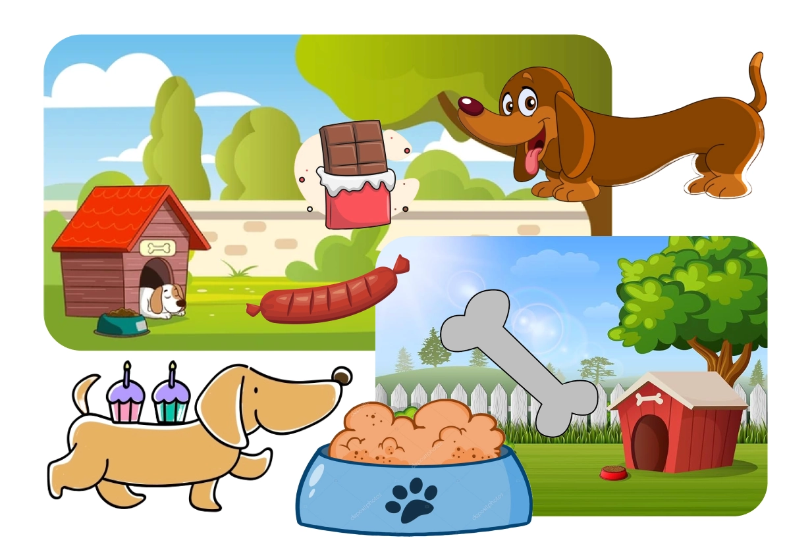
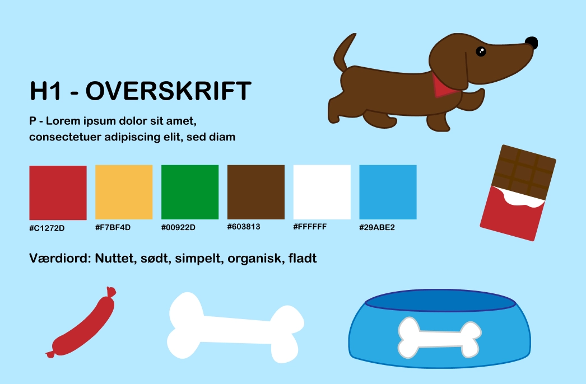
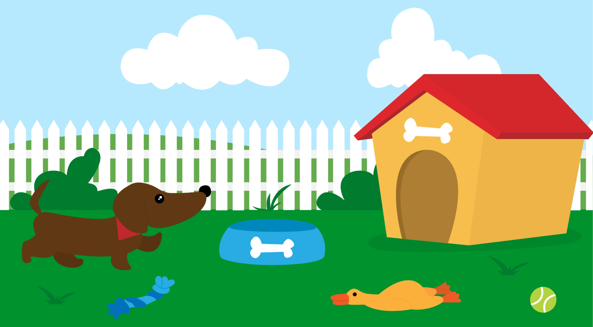
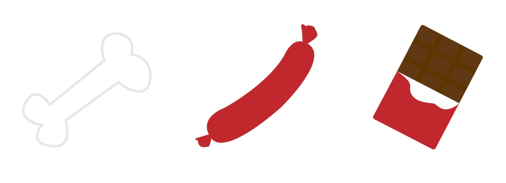
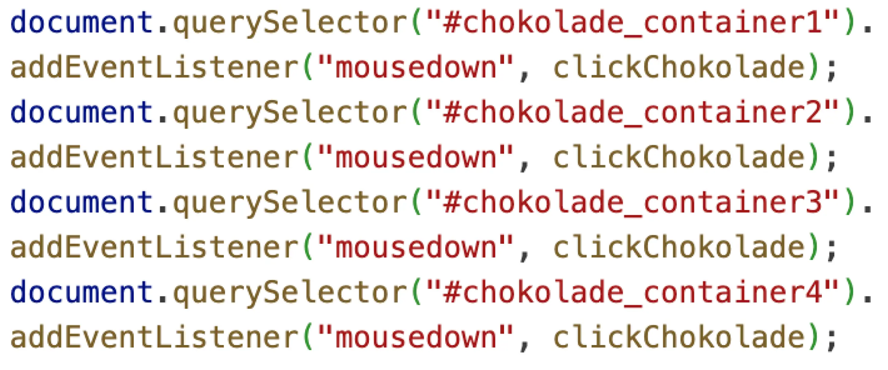
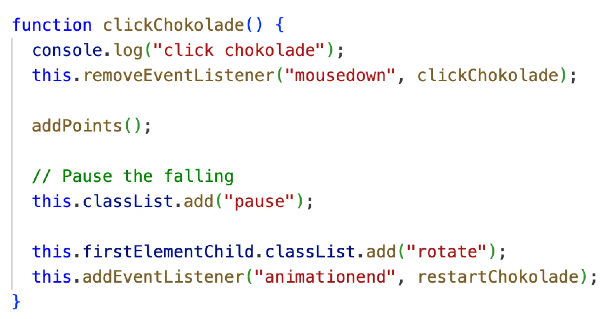
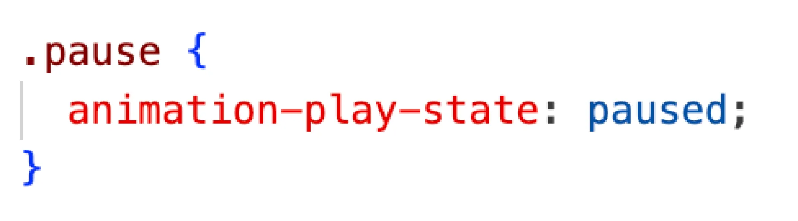

TEMA 4
GRUNDLÆGGENDE ANIMATION
I dette tema blev vi introduceret til Javascript hvor vi sammen med CSS-animationer skulle skabe et spil. Vi skulle selv designe alle elementer i Adobe Illustrator, og selv finde frem til et spil-koncept. Vi lærte dertil om teori inden for
UI-elementer og spildesign.
Forløbet bestod af én større opgave: Temaopgave. Vi fik til opgave at lave et spil på en hjemmeside bestående af flere sider med dokumentation af spillet. Jeg lavede et spil som går ud på at redde en gravhund fra at spise chokolade, da
chokolade er farligt for hunde.
TEMAOPGAVE
04.04.01
I arbejdet med Temaopgaven har jeg anvendt en række metoder og værktøjer, der har hjulpet mig med at designe og lave mit spil. Jeg startede med at skabe et moodboard og en styletile for at finde den visuelle stil jeg ville gå efter.
Til animationerne har jeg brugt både CSS-animationer og JavaScript for at skabe interaktive og dynamiske effekter. Jeg har arbejdet med designprincipper og spildesignteorier for at skabe et engagerende og brugervenligt spil.
Jeg har brugt Illustrator til at designe mine grafiske elementer og visualiseret mine idéer via skitser. For at holde styr på projektets processer og opgaver brugte jeg et Trello-board. Derudover har jeg udviklet state machine diagrammer
og aktivitetsdiagrammer til at planlægge animationernes flow og interaktioner. Jeg har også eksperimenteret med lyd for at tilføje en ekstra dimension til animationerne.
Nedenfor vil jeg demonstrere med et par eksempler, hvordan jeg har anvendt den læring og viden fra dette tema til at udvikle mit spil.
SPILDESIGN
Mit spils design er inspireret af en kombination af Baby Bias, Flat Design og Bouba-effekten, hvorpå jeg har prøvet at skabe en unik visuel og følelsesmæssig oplevelse for spilleren. Baby Bias trækker på de søde og tiltalende karakteristika, og skaber medlidenhed hos brugeren. Flat Design bidrager med et moderne og minimalistisk udtryk, hvor enkelthed og funktionalitet er i fokus. Bouba-effekten fokuserer på brugen af bløde, runde former, som naturligt fremkalder en følelse af venlighed og komfort. Mit formål med denne blanding af stilarter var at skabe et spil, der både er visuelt tiltalende og let at engagere og navigere sig i.
På nedenstående billeder ses mit moodboard og styletile for mit spils design og stil.
 EKSEMPEL PÅ SPILDESIGN
På nedenstående billede ses mit færdige baggrundsdesign samt mine UI-elementer, som er tegnet i Adobe Illustrator.
 
JAVASCRIPT OG CSS ANIMATIONER
Vi blev introduceret til JavaScript og CSS-animationer, som vi brugte til at udvikle vores eget spil helt fra bunden. JavaScript og CSS-animationer bruges sammen til at skabe interaktive og dynamiske oplevelser på websider. CSS styrer animationernes udseende, mens JavaScript kan styre deres timing og reaktion på brugerens handlinger.
EKSEMPEL PÅ KODE
På nedenstående billede ses hvordan jeg med Javascript har lavet en EventListener som kalder på funktionen clickChokolade når man holder musen nede på de 4 chokolader.
På nedenstående billede ses funktionen clickChokolade, som tilføjer CSS-klasserne "pause" og "rotate" til chokoladerne. Disse CSS-klasser får chokoladen til at pause, rotere og derefter forsvinde. Dernæst har jeg implementeret en EventListener, der aktiverer funktionen restartChokolade som genstarter chokoladen når animationen er slut.
Nedenstående billede viser hvordan jeg med CSS-klasser og CSS-animationer får mine UI-elementer til at pause, rotere 360grader og forsvinde med en opløsning på 0.
